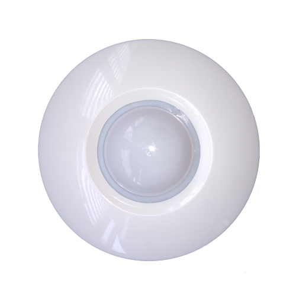

Smart Lamp 2019 dengan Pir Motion Sensor
Nama Kelompok
Pengertian PIR Motion Sensor
Passive Infra Red Sensor adalah sebuah sensor elektronik yang mengukur cahaya inframerah memancar dari benda-benda di lapangan pandang. Biasanya PIR digunakan untuk Beban lampu penerangan dalam suatu ruangan lazimnya dioperasikan secara manual oleh manusia. Dengan kemajuan teknologi saat ini, campur tangan manusia dalam operasional berusaha dikurangi. Saklar otomatis akan dapat memudahkan operasional. Efektif dan efisien untuk menghindari lampu yang menyala sia-sia tanpa ada aktifitas. Tujuannya tak lain untuk menghindari pekmborosan energi listrik.Penelitian ini mengambil topik tentang perancangan saklar otomatis untuk mengoperasikan beban lampu penerangan suatu ruangan. Saklar otomatis ini menggunakan masukan berupa sensor kehadiran orang jenis passive infrared (PIR) dan sensor intensitas cahaya jenis light dependent resistor (LDR). PIR termasuk sensor pyroelectric yang mempunyai respon sesaat ada perubahan panas. Sumber panas diradiasikan dengan infra merah.Tubuh manusia menghasilkan energi panas yang diradiasikan dengan infra merah. Radiasi panas tubuh manusia akan diterima sensor untuk respon masukan rangkaian. Rangkaian lengkap terdiri dari passive infrared sensor, lensa fresnel, rangkaian utama, power supply, LDR dan beban lampu penerangan. Pada intinya PIR dan LDR ini akan menjadi driver transistor. Transistor yang berfungsi sebagai saklar elektronik yang akan memutus dan menghubungkan beban lampu penerangan.
Penggunaan Smart Lamp pada kehidupan sehari - hari akan memberikan banyak. Salah satu manfaat yang diberikan oleh smart lamp ialah Kualitas hidup lebih baik. Hal ini dapat dikatakan demikian berkat kemajuan teknologi yang dimana seorang pengguna dapat mengatur lampu pintar dengan jarak jauh. Selain itu, penggunaan smart lamp memberikan manfaat dalam hal efisiensi energi karena smart lamp menggunakan lampu jenis LED yang dimana LED ini dikenal irit listrik.
Fitur Fitur yang ditawarkan |
Bagaimana kamu akan mengendalikan lampunya? Penggunaan lampu pintar (smart lamp) ditujukan untuk mengoptimalkan fungsi pencahayaan pada berbagai jenis ruangan. Jika kamu merasa tidak nyaman dengan pencahayaan yang terlalu terang di ruang tidur atau ruang keluarga, tingkat kecerahannya kini bisa diatur ketika kamu menggunakan lampu pintar. Tidak hanya unggul dari fitur pengaturannya, lampu pintar juga bisa digunakan dengan lebih praktis menggunakan aplikasi, sehingga kendalinya dapat diatur dari jarak jauh. Hal ini akan sangat bermanfaat jika kamu sedang berada di luar rumah agar konsumsi daya listrik bisa lebih aman dan efisien Apa saja jenis produk smart lighting? Jika kamu melakukan pencarian secara online, kamu bisa menemukan beberapa pilihan produk ‘smart lighting’ dengan nama yang berbeda-beda. Pernah mendengar istilah smart bulb, smart plugs atau smart switches? Semua istilah tersebut pada dasarnya adalah komponen yang bisa digunakan untuk mendukung penggunaan lampu pintar di rumah kamu. Beberapa merek biasanya menawarkan produk mereka dalam satu paket starter kit, sedangkan merek lainnya menjual sebuah produk secara mandiri karena tidak memerlukan komponen pendukung lain untuk digunakan. Apa perbedaan smart bulb, smart plugs atau smart switches? Smart bulb adalah bola lampu (bohlam) yang bisa langsung dipasangkan langsung pada soket lampu di rumahmu. Hal yang perlu diperhatikan adalah jenis atau ukuran soket lampu, ukuran yang lazim digunakan di Indonesia adalah soket E27 atau E14. Smart plug adalah perangkat koneksi lampu yang bisa dihubungkan melalui soket listrik yang sudah kamu miliki pada bagian dinding ruangan. Perangkat yang dipasangkan bisa saja berupa radio transmitter yang berfungsi sebagai penghubung perangkat lampu pintar lain yang terpisah. Selain itu, smart switch adalah tombol sakelar yang bisa digunakan untuk menghubungkan lampu pintar melalui koneksi kabel yang terintegrasi. |
| |
Pilihan tentunya ada di tangan kamu, sistem pencahayaan seperti apa yang ingin kamu buat di rumah? Jika kamu hanya ingin mengubah dekorasi lampu di kamar tidur, kamu bisa memilih smart bulb dengan ukuran yang sesuai dengan soket lampu di ruangan. Akan tetapi, pastikan ukurannya sudah sesuai sehingga kamu bisa langsung mengatur fungsi lampu tersebut dari gadget ataupun perangkat kendali lainnya. Kamu bisa memilih smart plug atau smart switch apabila kamu ingin mengubah sistem pencahayaan di rumah kamu melalui satu sistem yang terintegrasi. Hal ini akan mempermudah kamu untuk mengatur beberapa perangkat lampu pintar sekaligus untuk menciptakan suasana yang lebih nyaman dengan kendali yang praktis. Bagaimana cara mengoperasikannya? Penggunaan lampu pintar biasanya terintegrasi melalui konektivitas jaringan, baik jaringan LAN, Wi-Fi ataupun Bluetooth. Kamu biasanya dapat mengunduh penggunaan aplikasi pada gadget atau smartphone untuk bisa mengendalikan penggunaan lampu dari jarak jauh. Beberapa merek produk juga memungkinkan kamu untuk melakukan kendali secara langsung pada bagian perangkat. Salah satu produk yang bisa dikendalikan langsung pada bagian perangkat adalah Xiaomi Yeelight Bedside Lamp, penggunaan fitur lampu pintar ini dapat diatur langsung dengan sensor sentuhan pada bagian atas permukaan lampu. Akan tetapi kamu juga bisa menghubungkan kontektivitas Bluetooth untuk menghubungkan koneksi remote dari aplikasi pada gadget. Produk lain yang berbeda adalah Philips Hue, penggunaannya memerlukan integrasi jaringan yang terhubung melalui koneksi WiFi dengan kelengkapan starter kit. Setelah terhubung ke dalam satu jaringan yang sama, kamu bisa mengatur waktu untuk menyalakan dan memadamkan lampu, serta mengatur warna pencahayaan melalui aplikasi di dalam gadget. |
-
Albox Pet Immune PIR
-
Ceiling Mount PIR Detector
 -
Door Window Motion Detector
-
DSC Ceiling PIR
-
DSC PIR Pet Immune With Bracket
-
Dualtech PIR+Microwave Detector
-
Optex Outdoor PIR
Perangkat yang dibutuhkan
-
Gambar 1

-
Gambar 2

-
Gambar 3
-
Gambar 4

Kelebihan Smart Lamp |
|
Penggunaan motion sensor sebagai sensor lampu/alat elektronik, perangkat ini berfungsi sebagai sakelar otomatis yang menyalakan lampu saat mendeteksi adanya gerakan di ruangan. Penggunaan sensor lampu seperti ini dapat menghemat penggunaan listrik terutama pada daerah yang cukup jarang dilalui orang.
Lampu pintar ini mampu memancarkan cahaya dan temperatur yang didesain sedemikian rupa untuk meningkatkan kadar melatonin, sebuah zat dalam tubuh yang membuat tidur lebih berkualitas. Pada siang hari kalian juga bisa juga mengatur pencahayaan lampu menjadi lebih terang agar meningkatkan produktivitas |
Teknologi lampu pintar memungkinkan kita mengatur kapan lampu nyala dan mati. Bahkan lampu pintar yang disertai sensor gerak mampu secara otomatis mati ketika ruangan tertentu telah kita tinggalkan.
Keunggulan lain dari lampu pintar ini tentu saja kita bisa mengatur warna lampu sesuai mood atau aktivitas yang tengah kita jalani. Kita bisa secara bebas memilih aneka ragam warna cahaya melalui smartphone. Pemilihan cahaya ini penting untuk meningkatkan produktivitas kerja atau membantu kita untuk menjalani hari dengan lebih ceria.
Beberapa teknologi lampu pintar seperti merek MiPOW Playbulb Color telah memiliki sistem speaker di dalamnya yang dihidupkan dengan koneksi bluetooth. Misalnya ketika kita memutar musik mellow di smartphone maka pencahayaan akan meredup. Sebaliknya, ketika kita memutar lagu dengan tempo yang tinggi, lampu akan berwarna pink atau cerah.
Kekurangan Smart Lamp
Harga lampu pintar ini memang lebih mahal dari lampu LED biasa. Satu buah lampu pintar merek Xiaomi saja misalnya berharga sekitar Rp250.000 untuk daya 10 watt.
Lampu pintar berbasis LED dengan multi sensor masih memiliki kekurangan yaitu pancaran cahaya yang dihasilkan dari lampu masih berbentuk spot dimana sinar menyorot terarah dan pancaran sinarnya tidak meluas/menyebar.
Berbagai Tipe Perangkat Pendeteksi Gerakan (Motion Sensor)
-
Active Infrared Sensors Perangkat tipe ini bekerja dengan memancarkan sinyal listrik secara terus-menerus dengan menggunakan gelombang infrared yang terhubung dengan pendeteksi cahaya. Jika infrared terganggu karena adanya gerakan, maka sistem akan menghidupkan lampu. Perangkat ini biasanya digunakan dengan tujuan untuk mengontrol lampu rumah, jika tidak ada orang dalam ruangan, lampu akan otomatis dimatikan untuk menghemat listrik.
-
Passive Infrared (PIR) Sensors Berbeda dengan tipe sebelumnya, perangkat ini bekerja berdasarkan sumber panas yang dibawa oleh objek yang bergerak. Jika ada gerakan manusia yang melewati perangkat ini, secara otomatis perangkat akan mendeteksi adanya sumber panas dan mengaktifkan alarm. Perangkat tipe ini merupakan perangkat yang umum digunakan untuk sistem keamanan rumah.


-
Active Ultrasonic Sensors Perangkat ini bekerja memancarkan gelombang suara berfrekuensi tinggi (di mana kita tidak akan bisa mendengarnya) terus menerus. Suara yang timbul akibat adanya gerakan akan mengintrupsi gelombang suara dalam sensor, sehingga perangkat ini akan mengaktifkan alarm.
-
Passive Ultrasonic Sensors Perangkat tipe ini tidak memancarkan sensor suara, sebaliknya perangkat ini menunggu adanya aktifitas suara seperti adanya suara pecahan kaca jendela, kaca pintu, langkah kaki manusia, dll. Ketika aktifitas suara terdeteksi, maka secara otomatis sistem akan mengaktifkan alarm.


Cara Kerja Sensor PIR
- Sensor PIR ini bekerja dengan menangkap energi panas yang dihasilkan dari pancaran sinar inframerah pasif yang dimiliki setiap benda dengan suhu benda diatas nol mutlak seperti suhu tubuh manusia diatas 32 derajat celsius.
- Pancaran sinar inframerah inilah yang kemudian ditangkap oleh Pyroelectric sensor yang merupakan inti dari sensor PIR ini sehingga menyebabkan Pyroelectic sensor menghasilkan arus listrik.
- Sensor PIR dapat bereaksi dengan tubuh manusia. Disebabkan oleh adanya IR Filter yang dapat menyaring panjang gelombang sinar inframerah pasif.
- Ketika manusia berada di depan sensor PIR dengan kondisi diam, maka sensor PIR akan menghitung panjang gelombang yang dihasilkan oleh tubuh manusia tersebut.
- Ketika manusia bergerak, maka tubuh manusia akan menghasilkan pancaran sinar inframerah pasif dengan panjang gelombang yang bervariasi sehingga menyebabkan sensor merespon dengan cara menghasilkan arus pada material Pyroelectricnya dengan besaran yang berbeda beda. Karena besaran yang berbeda inilah comparator menghasilkan output.
- Untuk jarak jangkau dari sensor PIR sendiri bisa disetting sesuai kebutuhan, akan tetapi jarak maksimalnya hanya +/- 10 meter dan minimal +/- 30 cm.
- Pada pembuatan Lampu Pintar Berbasis LED dengan Multi Sensor ini, metodologi dibagi menjadi dua tahapan yaitu tahapan pembuatan perangkat keras (hardware), dimana pada tahapan ini dibuat beberapa rangkaian elektronika dan mekanik dari Lampu Pintar Berbasis LED. Tahapan selanjutnya adalah pembuatan perangkat lunak (software) meliputi pembuatan program.
Gambar Cara Kerja Sensor PIR
-
Gambar 1

-
Gambar 2

-
Gambar 3

Contoh Penggunaan Pir Motion Sensor
Kesimpulan
Lampu Pintar Berbasis LED dengan Multi Sensor dapat menghasilkan sumber cahaya penerangan sebesar 257,6 lux yang telah memenuhi tingkat pencahayaan minimum yang direkomendasikan untuk rumah tinggal sesuai dengan standar SNI 03 6575 2001, dan mampu memberikan pencahayaan ruangan yang konstan dengan error maksimal sekitar 5,65 lux. Penggabungan sensor PIR dan sensor Ultrasonik sebagai sensor keberadaan mampu mendeteksi gerakan kecil yang ditimbulkan oleh manusia. Produk Lampu Pintar Berbasis LED dengan Multi Sensor menggunakan standar soket E27 dapat mempermudah pengguna dalam pemasangan.
Daftar Referensi
- LED-based Smart Lamp with Multi Sensor Lampu Pintar Berbasis LED dengan Multi Sensor pada Link
- Video Smart-Lamp-2019 Youtube
- Git Hub Stylus src/scripts/main.js
- Thanks For Your Attention :)